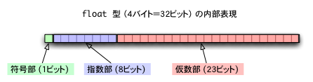
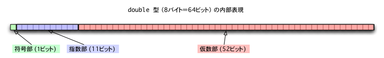
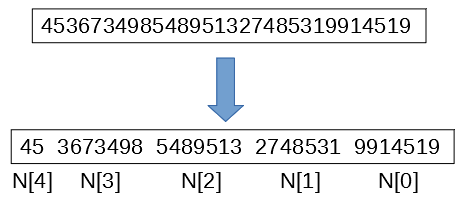

背景
現在使われているパソコンは64bitのものがほとんどだと思います。Windows XP世代のパソコンは32bitが多いみたいです。
32bitのパソコンの問題点はメモリが約4.3GB(2の32乗バイト)までしか使うことができないことで（いわゆる4GBの壁）、この関係から今のパソコンは64bitが主流になっています。(ちなみに遥か昔の16bitのパソコンは65536バイトのメモリしか使えなかったというのだから恐ろしい)
一方で現在主流のパソコンが64bitである関係上、計算プログラムなどに使われる変数は64bit長が一般的です。（64bit変数同士の計算を最も効率的に行えるため）
64bit整数は約±922京までの整数を表現でき、倍精度浮動小数点型は10進数で15桁の精度を持つため一般的な用途のプログラムでは十分ですが、公開鍵暗号の実装や円周率の計算、高精度のシミュレーションでは64bitでは不十分で何千bitもの桁数の数字を扱うことがあるので普通のlong int型（Windowsの場合はlong long int型）で計算すると桁が溢れます。
このような場合、多倍長演算をソフトウェアで実装する必要があります。この方法について論じていこうと思います。
基礎知識
64bitのCPUによってハードウェアで扱える数値型にはどのようなものがあるのでしょうか。以下にその具体例を並べてみました。
| 型名 |
C言語での型 |
扱える数値 |
| 8bit整数型 |
char |
-128～+127 |
| 8bit整数型（符合なし） |
unsigned char |
0～+255 |
| 16bit整数型 |
short |
-32,768～+32,767 |
| 16bit整数型（符合なし） |
unsigned short |
0～+65,535 |
| 32bit整数型 |
int |
-2,147,483,648～+2,147,483,647 |
| 32bit整数型（符合なし） |
unsigned int |
0～+4,294,967,295 |
| 64bit整数型 |
long long int |
-9,223,372,036,854,775,808～+9,223,372,036,854,775,807 |
| 64bit整数型（符合なし） |
unsigned long long int |
0～+18,446,744,073,709,551,615 |
| 半精度(16bit)浮動小数点型 |
|
+-6.10×10^-5～6.55×10^4 |
| 単精度(32bit)浮動小数点型 |
float |
+-1.18×10^-38 ～ 3.40×10^38 |
| 倍精度(64bit)浮動小数点型 |
double |
+-2.23×10^-308 ～ 1.79×10^308 |
整数型は一番桁の大きいビットを符号、それ以外のビットを数値に使っています。（unsigned～は全ビットを数値に用いています）
一方で浮動小数点型は少し複雑です。半精度(16bit)浮動小数点型は10bit、単精度(32bit)浮動小数点型は23bit、倍精度(64bit)浮動小数点型は52bitを仮数部（有効数字）に当てています。図で表すとこんな感じです。


C言語の場合、多倍長整数演算は64bit整数型の組み合わせで作るのが一般的ですが、Javascriptの数値型は全てdouble型であるため浮動小数点型を用いて実装してみようと思います。
実装
倍精度浮動小数点型は2進数で52桁、10進数にして15桁の精度を持ちます。つまり演算の結果がこの桁数より低い桁に収まれば丸め誤差は発生しないということになります。
10進数⇔2進数の基数変換は今回は実装しないので10進数のまま実装します。
この場合、乗算の結果が15桁以内になる最大桁数である7桁×7桁を1変数に割り当てればいいことになります。(7桁×8桁でもいいがプログラムが複雑になる割には対して速くならないため今回は7桁×7桁で実装)
多倍長変数を7桁ずつに分割してdouble型の配列に格納し、それぞれの要素を1つの桁として計算するため実態は10000000進数同士の二項演算となります。

●加算・減算
加算の場合は多倍長整数を格納した配列を下の桁からそれぞれ逐次的に加算・繰り上がり処理を行うことで実装します。（10000000進数の筆算です）
減算の場合も同様ですが、計算結果がマイナスになる場合があるため注意が必要です。
なお、加減算の計算コストは\(O(n)\)となります。
●乗算
乗算に関しては筆算よりも高速なアルゴリズムが存在しますが、桁数が小さい場合は必ずしも高速とは言えないため桁数に応じて使い分ける必要があります。
筆算の場合は2つの配列の各要素を全ての組み合わせで掛ける必要があるので計算コストは\(O(n^{2})\)となります。これはもう説明不要ですね。
筆算よりも高速なアルゴリズムとして、カラツバ法があります。これは多倍長整数を上位と下位の桁に2分割することにより乗算の回数が4分の3になることを利用したものです。
桁数が大きい場合は何度も分割することでその度に乗算コストが4分の3になるため桁数が大きくなるほど筆算に比べて高速化します。
桁数が2倍になると計算量が3倍になるため計算量は\(O(n^{\log_{2}3})=O(n^{1.585})\)となります。
例としてXとYの積Zを求める場合を考えます。XとYを次のように上位と下位の桁で分割すると次のように表せます。
\[
X=bx_1+x_0
\]
\[
Y=by_1+y_0
\]
ここでbは分割の基数です。(例えば 12345678 = 10000×1234 + 5678 の10000に相当)
この時Zを以下のように表すものとします。
\[
Z=b^{2}z_2+bz_1+z_0
\]
Zを計算するためには筆算では以下のような4回の乗算が必要です。
\[
z_2=x_1・y_1
\]
\[
z_1=x_1・y_0+x_0・y_1
\]
\[
z_0=x_0・y_0
\]
カラツバ法では以下の順番で計算を実行することにより乗算回数を3回に減らします。
\[
z_2=x_1・y_1
\]
\[
z_0=x_0・y_0
\]
\[
z_1=z_2+z_0-(x_1-x_0)・(y_1-y_0)
\]
加減算の回数は大幅に増えますが、計算コストの大きい乗算回数が減ることで全体的な計算コストが減ることになります。
カラツバ法を分割数について一般化したものがToom-Cook法です。
3分割の場合の計算量は\(O(n^{\log_{3}5})=O(n^{1.465})\)となります。
T00m-Cook法より高速なアルゴリズムとして、FFT(高速フーリエ変換)を利用した方法があります。FFTを用いるとn要素のフーリエ変換が\(O(n\log{n})\)で計算可能で、
フーリエ変換を行うと畳み込みが各要素ごとの積に変換されるので、これを逆フーリエ変換すると多倍長整数の積が得られます。
多倍長整数の乗算の場合は通常のフーリエ変換ではなく整数環フーリエ変換（pを法とする1の原始p乗根を回転子として用いる）が使われます。
法とする数pは要素数より大きくなければならず、各要素ごとに桁数に比例した計算量を必要とするため計算量は\(O(n\log{n}・\log{\log{n}})\)となります。
テスト
半角数字、整数のみ
|
|
|
|
|